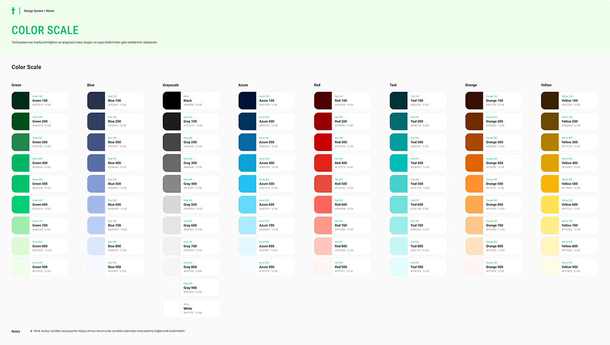
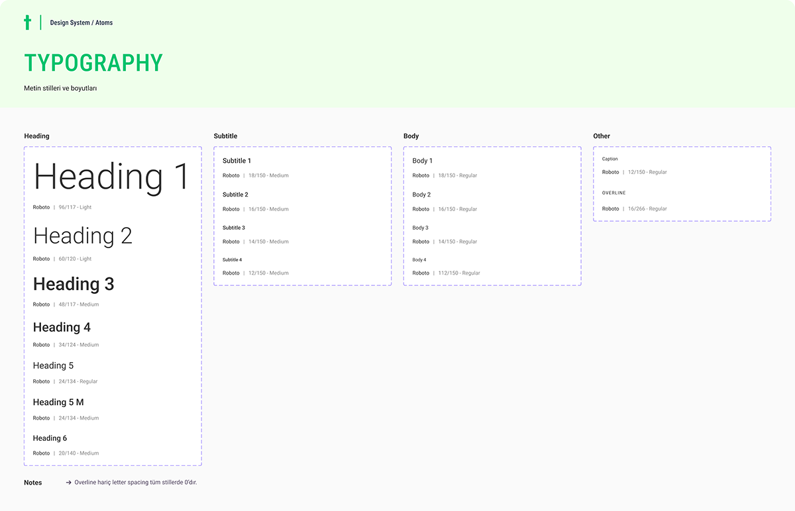
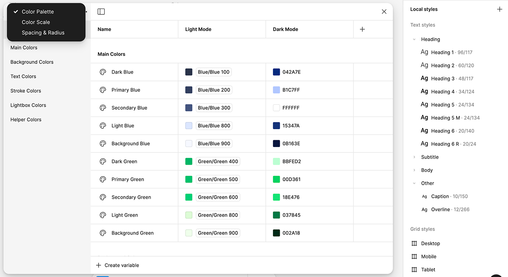
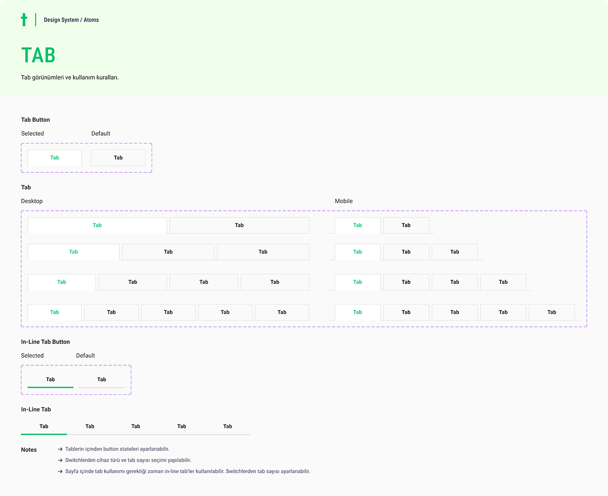
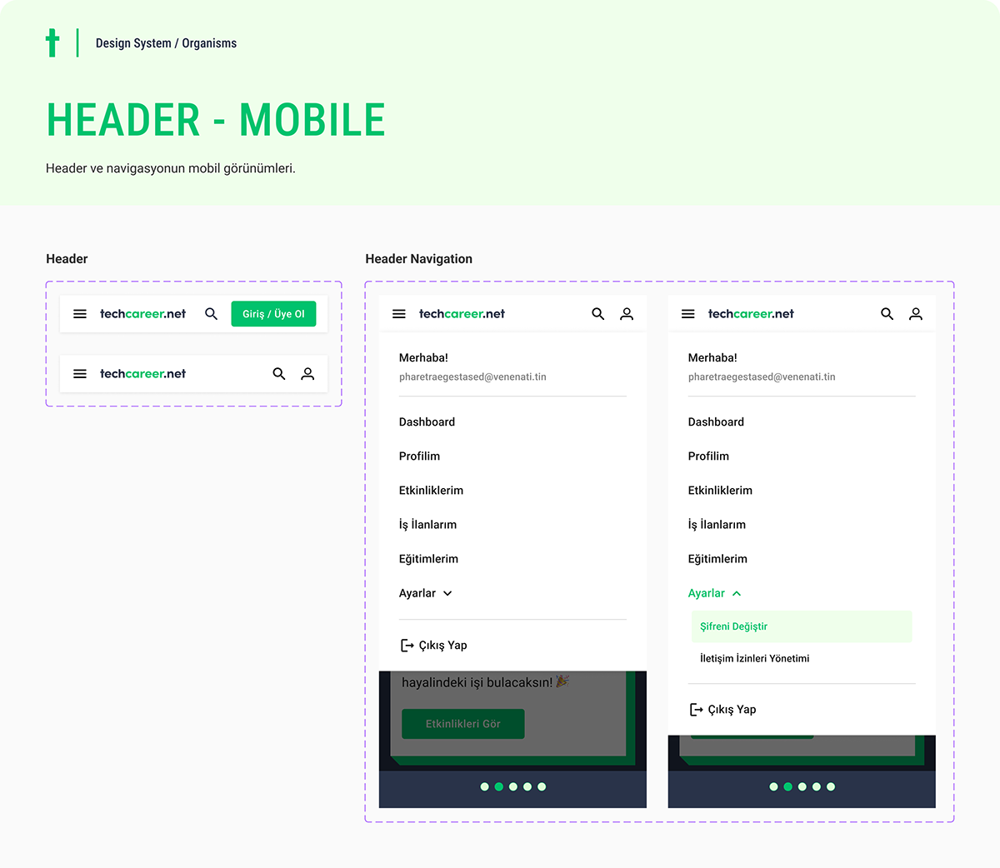
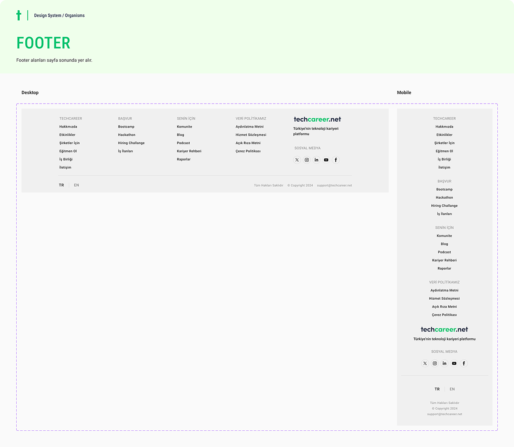

The architecture
The system is split into two published libraries: Atoms (foundational styles plus simple molecules, merged for practicality) and Organisms (complex components like headers, footers, and navigation). Every design file subscribes to these libraries, so a token change propagates across all product work.
Foundations: from raw scale to semantic tokens
Color starts as a raw scale and is then mapped to semantic roles (text, background, stroke, helper colors) for both light and dark mode. Designers pick colors by role, which makes theming and consistency automatic.



Variables make it live
Styles are registered as Figma local variables and styles, with light/dark values paired per token. Once the Atoms library is published, every design file in the organization selects from the same palette and variables allow the designs to instantly switch themes when applied to a frame.

Components: every state, as variants
Molecules and organisms are built with variant architecture so each component carries all of its states, configurable from the instance panel while staying locked to the system.



Making the system legible to AI
A design system's newest target isn't a designer or a developer, but an AI agent. Documenting the system's tokens, components, and usage rules as Markdown files and Claude Skills allows tools like Claude Code to generate on-system UI directly, and the Figma MCP server acts as a bridge between the design files and code. The same discipline that keeps human designers consistent also makes AI-generated interfaces land.
Maintaining it is the real work
A design system is a product with users. The ongoing work is governance: reviewing new component needs against existing patterns, keeping documentation current inside the files themselves, and publishing library updates so downstream design files stay in sync. The payoff shows in the web work built on top of it — see the Techcareer.net responsive web designs.